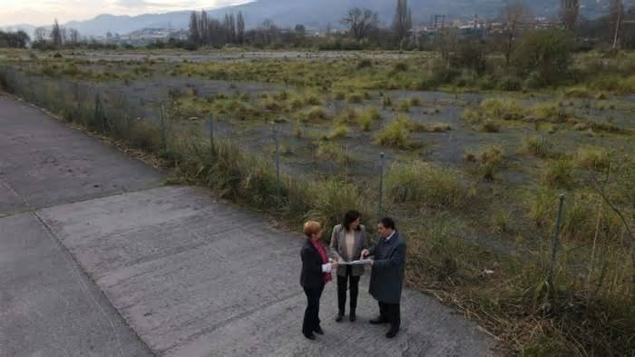

Gobierno Vasco destina 19 millones de euros a impulsar proyectos estratégicos de innovación a través del programa Faros

La primera convocatoria financiará proyectos de alto impacto y nuevas infraestructuras científico-tecnológicas VITORIA, 6 (EUROPA PRESS) El Gobierno Vasco ha aprobado la primera convocatoria competiti ...
La primera convocatoria financiará proyectos de alto impacto y nuevas infraestructuras científico-tecnológicas VITORIA, 6 (EUROPA PRESS) El Gobierno Vasco ha aprobado la primera convocatoria competiti ...
Noticia publicada por Europa Press on MSN. Consulta el artículo original en Europa Press on MSN para más información.